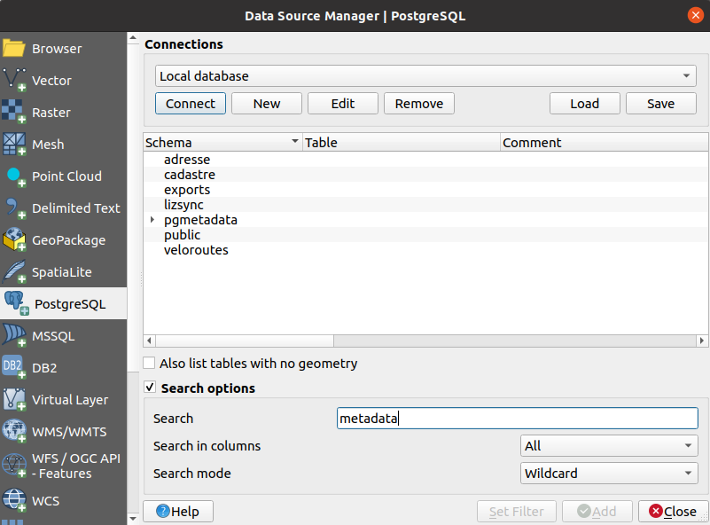
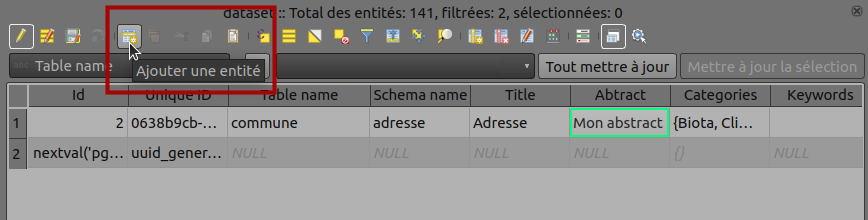

Table of content
For the normal user
Hide Processing algorithms
The system administrator can hide PgMetadata Processing algorithms from normal users by adding a environment
variable PGMETADATA_USER. If this variable exists, Processing algorithms won't be displayed.
Locator
Type ctrl+k in QGIS to open the locator widget. You can start type meta then you should see layers in the
list.
Datasource manager
This works without the plugin installed on the computer. It's native in QGIS.

Panel
The PgMetadata panel can be opened. If set, the layer metadata will be displayed according to the layer selected in the legend.
For the administrator
Installation
Database
- The plugin is using a schema in PostgreSQL.
- If you just installed the plugin in a new organization, you must use the install database structure
- If the
pgmetadataschema is already existing in your database, you may need to upgrade it after a plugin upgrade using the upgrade database structure
Administration project
- The GIS administrator can generate a QGIS project using create metadata project. You need to open the generated project and use the normal QGIS editing tools.
- In the group called
Information Warnings:Orphan metadatadisplays tables not existing in the database itself, but the metadata exists in thedatasettable.Orphan tablesis the reverse. It displays tables existing in the database but in thedatasettable.
- On the
Datasettable, open the attribute table, switch on Edition mode and add a new row. You need to fill a row with these minimum information :- Table name,
- Schema name,
- Title,
- Abstract,
- Etc

You need to save your dataset layer by switching off editable mode.
HTML Template
You can customize the HTML template.
- Use
[% "name_of_field" %]to display a specific field, egabstract. - use
[% meta_contacts %]to display all contacts related. It's using the template calledcontact. - use
[% meta_links %]to display all links related. It's using the template calledlink.